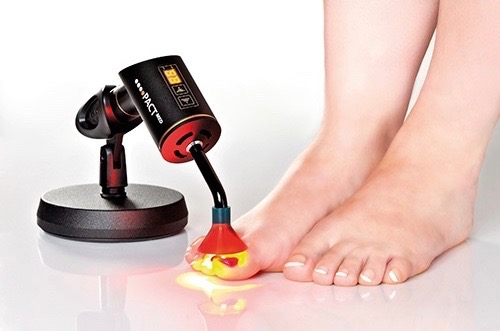

Gesichtsbehandlungen
Klassische Kosmetikbehandlung
Die Komplettlösung
Hals-/Gesicht-und Dekolletébehandlung mit individuell auf Ihre Haut abgestimmten Spezialprodukten, inkl. Wirkstoffampulle und Augenpackung/-maske.
- Nackenmassage
- Reinigungsmassage
- Hautanalyse
- Intensivpeeling
- Bedampfung
- Behandlung von Hautunreinheiten
- Augenbrauenkorrektur
- Wirkstoffampulle oder Serum
- Gesichts-Hals-Dekolletémassage
- Packung/Maske
- Abschlusspflege
Kurzbehandlung
Intensive Pflege und Entspannung für zwischendurch
- Nackenmassage
- Reinigungsmassage
- Intensivpeeling
- Gesichts-Hals-Dekolletémassage
- Abschlusspflege
Intensiv-Gesichtsreinigung
- Reinigungsmassage
- Intensivpeeling
- Bedampfung
- Behandlung von Hautunreinheiten
- Ampulle
- Abschlusspflege
Teenager
bis 19 Jahre
- Reinigungsmassage
- Intensivpeeling
- Bedampfung
- Behandlung von Hautunreinheiten
- Augenbrauenkorrektur
- Maske/Packung
Herren
Die Kosmetikbehandlung für Männer
- Nackenmassage
- Reinigungsmassage
- Intensivpeeling
- Bedampfung
- Behandlung von Hautunreinheiten
- Augenbrauenkorrektur auf Wunsch
- Wirkstoffampulle oder Serum
- Gesichtsmassage
- Abschlusspflege
Micro Needling
Das natürliche Face-Lift ohne OP
Das Micro Needling mittels Needling Pen ist ein neues und
sehr erfolgreiches Verfahren im Bereich der Anti-Aging- und
Problemhaut-Behandlungen. Durch die gezielte Perforation der Haut
(Needling Pen mit 24 feinen Nadeln), setzen die Zellen unmittelbar
nach der Anwendung Wachstumsfaktoren frei, welche die Produktion
von Kollagen und Elastin und die Ausschüttung von Hyaluronsäure
stimulieren.
Die Aufnahmefähigkeit der aufgetragenen Wirkstoffe
wird erheblich gesteigert, was zu einem deutlich verbesserten
Hautergebnis führt. Anwendungsbereiche:
Gesicht, Augen, Lippen, Hals, Dekolleté, Körper und Hände.
Sensationelle Ergebnisse im Bereich:
- Hautfestigung
- Faltenreduktion
- Hautverjüngung von sonnengeschädigter Haut
- Narben verschiedener Art (besonders Aknenarben)
- Dehnungs- und Schwangerschaftsstreifen
- Aufhellung von Pigmentstörungen
- Porenverkleinerung und Verfeinerung des Hautbildes
Es wird eine Kurbehandlung von 4-6 Behandlungen in 4-wöchigen Abständen empfohlen
Fruchtsäurepeeling
Bei vielen Hautleiden kommt es zu einer übermäßigen Anhäufung toter Hautzellen, so dass die Haut dick wird und ihren Glanz verliert. Mit Hilfe von Fruchtsäuren lassen sich die auf der Hautoberfläche liegenden Hautzellschichten ablösen und entfernen. Auf diese Weise wird die Schicht der Hornzellen dünner und es kommt zu einer fortlaufenden Verbesserung des Aussehens und der Beschaffenheit der Haut. Anwendung unter Einschleusung von Hyaluronsäure bei:
- Akne (jugendliche/erwachsene Haut)
- offene und geschlossene Komedonen (Mitesser)
- unreine und grobporige Haut
- reife Haut, erschlaffte Haut, Fältchen, Pigmentflecken
- lichtgeschädigte Haut
- stumpfe, glanzlose und raue Haut
Diamant-Mikrodermabrasion
Das Geheimnis der Stars
Kontrolliertes Abtragen von Verhornungen, Anregung der Zellteilung
und Verfeinerung des Hautbildes, Minderung von Falten, Aufhellen von
Pigment- und Altersflecken, Verbesserung von Narben, Behandlung von
großporiger und unreiner Haut, selbst für empfindliche Haut geeignet.
Auch hier wird hochdosierte Hyaluronsäure mit Ultraschall eingeschleust.
- Akne (jugendliche/erwachsene Haut)
- offene und geschlossene Komedonen (Mitesser)
- unreine und grobporige Haut
- reife Haut, erschlaffte Haut, Fältchen, Pigmentflecken
- lichtgeschädigte Haut
- stumpfe, glanzlose und raue Haut
Für strahlende Augen
Wimpern färben
Wimpern färben während einer Behandlung
Augenbrauen färben
Augenbrauen färben während einer Behandlung
Augenbrauen korrigieren
Wimpernwelle
Ausdrucksvoller Blick für ca. 6-8 Wochen. Dauerhafter Schwung und natürliche Betonung auch bei kurzen Wimpern
Wimpernwelle
Wimpernwelle mit Färben
Haarentfernung mit Wachs
Oberlippe oder Kinn
Oberlippe oder Kinn, während einer Behandlung
Gesicht
Beine bis Knie
Beine komplett
Achseln
Bikinizone (nur Damen)
Rücken
Brust
Massagen
Klassisch/Wellness
Wirkung: Entspannung der Muskulatur, lokale Verbesserung der Durchblutung, Senkung des Blutdrucks und des Pulses, Verbesserung des Zellstoffwechsels, Stressabbau, psychische Entspannung u.a.
Klassiche Körpermassageca. 60 min
Rückenmassage inkl. Arme und Händeca. 30 min
Hot Stone Massageca. 60 min
Ayurvedische Genzkörpermassageca. 60 min
Lomi Lomi Massageca. 60 min
Fussreflexzonenmassage
(nach Hanne Marquardt)
- Beschwerden lindern
- Selbstheilungskräfte anregen
- Verbesserung der Durchblutung und des peripheren Lymphabflusses
Maniküre
Maniküre-klein
- Beurteilung der Haut & Nägel
- Naturnägel formen
- Nagelbad
- Nagelhautpflege
- Abschlusscreme
Maniküre-Standard
- Beurteilung der Haut & Nägel
- Naturnägel formen
- Nagelbad
- Nagelhautpflege
- Handpeeling
- Handmassage
Maniküre-Wellness
- Beurteilung der Haut & Nägel
- Naturnägel formen
- Nagelbad
- Nagelhautpflege
- Hautpeeling
- Handmassage
- Paraffinbad
- Nägel polieren und lackieren
Shellac
Der Nagellack der Stars
Auftragbar wie Nagellack, haltbar wie Gel, mind. 14 Tage haltbar, kein Abblättern, absolut kratzfester, widerstands-fähiger UV-gehärteter Hochglanz (keine Trocknungszeit erforderlich).
SHELLAC-Lackierung (Firma CND)
Maniküre-klein + SHELLAC-Lackierung
Bereich Fusspflege
Medizinische Fachfußpflege
auch für Diabetiker geeignet
- Aromafußbad
- Nägel schneiden
- Nägelverschönerung
- Hornhaut entfernen
- Hühneraugen entfernen, ein Hühnerauge inkl.
- kurze Fußmassage
- Nägel polieren
Fussreflexzonenmassage
(nach Hanne Marquardt)
- Beschwerden lindern
- Selbstheilungskräfte anregen
- Verbesserung der Durchblutung und des peripheren Lymphabflusses
Neues ab Mitte September

Details zur Behandlung und Preise demnächst.
Zusatzleistungen
Hühneraugen entfernen, zwei und mehr
Nagelkorrektur mit der BS-Spange
bei schmerzhaft eingewachsenen/eingerollten Nägeln
Nägel lackieren
Relax-/Wellnessfußmassageca. 15 min
Fußparaffinbadca. 20 min